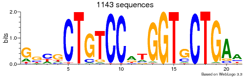
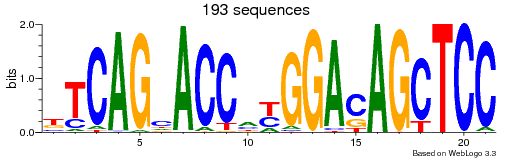
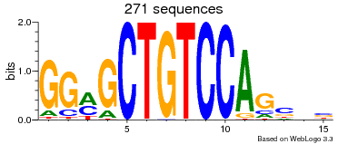
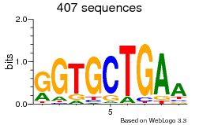
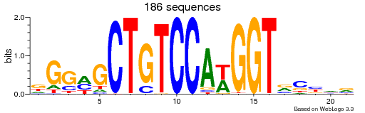

MODEL
Input File: GM12878.fa
Number of models learned: 5
Number of modes: 6
Mode 1
Forward strand motif

Reverse strand motif

Mode 2
Forward strand motif

Reverse strand motif

Mode 3
Forward strand motif

Reverse strand motif

Mode 4
Forward strand motif

Reverse strand motif

Mode 5
Forward strand motif

Reverse strand motif

Mode 6
Forward strand motif

Reverse strand motif

NOTE: Best model is chosen using lambda = 5